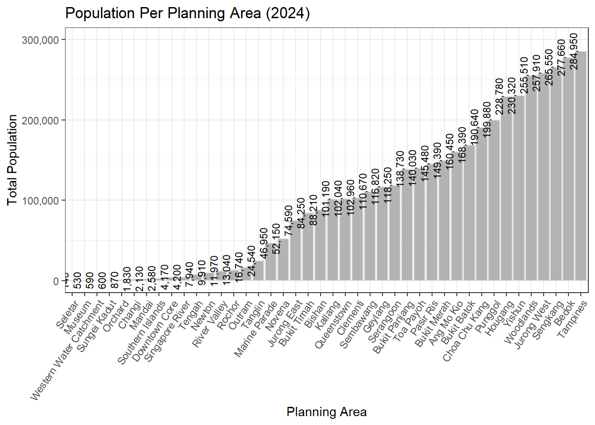

# Load necessary library
library(readr)
# Read the CSV file from the specified relative path
respopagesex2024 <- read_csv("TakeHome_01/respopagesex2024.csv")Take-home Exercise 1
Visualizing the Age and Gender Landscape of Singapore
1 Overview
1.1 Setting the scene
A local online media company that publishes daily content on digital platforms is planning to release an article on demographic structures and distribution of Singapore in 2024. This project will explore the demographic structure of Singapore’s resident population as of June 2024, which aims to uncover both national and regional trends in age distribution, gender composition, and population disparities across planning areas.
1.2 Tasks
As the graphical editor of the media company, this project aim to:
Clean and preprocess the demographic dataset.
Design and generate three targeted data visualizations:
Top 10 Planning Areas by Total Population: A horizontal bar chart focusing on the ten most populous planning areas to highlight urban population concentration, particularly in areas like Tampines, Bedok, and Sengkang.
Population Pyramid by Age and Sex: A detailed pyramid chart that illustrates Singapore’s national age and gender structure, revealing the dominance of the working-age population, the presence of an aging society, and gender differences in older age groups.
- Age and Gender Distribution in Top 5 Planning Areas: A set of stacked bar and ridgeline plots showing how population varies by age group and gender within the top five planning areas, offering insights into regional differences in youth, working-age, and elderly populations.
- Summarize key insights for each visualization to support the narrative.
2 The Data
The official dataset “Singapore Residents by Planning Area / Subzone, Single Year of Age and Sex” retrieve from department of statistics will be used to explore.
2.1 Loading Packages
The code chunk below uses p_load() of pacman package to check if tidyverse packages are installed in the computer. If they are, then they will be launched into R.
pacman::p_load(tidyverse)Beside tidyverse, following R packages will be used:
ggrepel: an R package provides geoms for ggplot2 to repel overlapping text labels.
ggthemes: an R package provides some extra themes, geoms, and scales for ‘ggplot2’.
hrbrthemes: an R package provides typography-centric themes and theme components for ggplot2.
patchwork: an R package for preparing composite figure created using ggplot2.
haven: Enables reading and writing of data files from statistical software packages like SPSS, Stata, and SAS.
ggiraph: for making ‘ggplot’ graphics interactive.
plotly: R library for plotting interactive statistical graphs.
DT: provides an R interface to the JavaScript library DataTables that create interactive table on html page.
knitr: Facilitates dynamic report generation by integrating R code into documents (used in R Markdown).
scales: Provides functions for scaling axes and legends in ggplot2 plots, including formatting numbers and dates.
ggridges: Allows creation of ridgeline plots (overlapping density plots) in ggplot2.
ggpubr: Enhances ggplot2 with publication-ready themes and functions for common tasks like adding statistical comparisons.
gganimate: Adds animation capabilities to ggplot2 visualizations.
gapminder: An excerpt of the data available at Gapminder.org.
ggdist: Supports visualizations of distributions and uncertainty (e.g., intervals, densities) in ggplot2.
ggtext: Enables advanced text rendering (e.g., HTML/Markdown) in ggplot2 titles, subtitles, and labels
ggalt: Provides alternative geoms and statistical transformations not available in core ggplot2.
cowplot: Offers streamlined tools to align and arrange ggplot2-based plots into panels.
pacman::p_load(tidyverse, ggrepel, ggthemes,
hrbrthemes, patchwork,
haven, ggiraph, plotly, DT,
knitr, scales,
ggridges, ggpubr,
gganimate, gapminder, ggdist,
ggtext, ggalt,
cowplot)2.2 Cleaning data
To prepare the dataset for all tasks, the following code will loads, cleans, and prepares the demographic data (respopagesex2024.csv) for analysis and visualization to make sure:
All numeric columns are actually numeric (for calculations)
Categorical columns behave predictably (for grouping)
Only analyzing valid population entries (no missing or zero values).
library(readr)
library(dplyr)
# Load the dataset
respop <- read_csv("TakeHome_01/respopagesex2024.csv")
# Convert types and clean
respop_clean <- respop %>%
mutate(
Pop = as.numeric(Pop),
Age = as.numeric(Age),
PA = as.factor(PA),
SZ = as.factor(SZ),
Sex = factor(Sex, levels = c("Males", "Females"))
) %>%
filter(!is.na(Pop), Pop > 0)The following code chunk will loads the dataset.
Cleans it by ensuring population values are numeric and valid.
Aggregates population totals by planning area.
Outputs a basic statistical overview of how population is distributed across Singapore’s planning areas.
library(readr)
library(dplyr)
library(ggplot2)
library(scales)
# Load and summarize population data
respopagesex2024 <- read_csv("TakeHome_01/respopagesex2024.csv")
pop_by_pa <- respopagesex2024 %>%
mutate(Pop = as.numeric(Pop)) %>%
filter(!is.na(Pop) & Pop > 0) %>%
group_by(PA) %>%
summarise(Total_Pop = sum(Pop, na.rm = TRUE))
# Check population range
print(summary(pop_by_pa$Total_Pop)) Min. 1st Qu. Median Mean 3rd Qu. Max.
140 8432 94700 99846 157685 284950 The following code chunk will loads the dataset, deep clean and check for missing or abnormal entries.
summary(respopagesex2024) PA SZ Age Sex
Length:60424 Length:60424 Length:60424 Length:60424
Class :character Class :character Class :character Class :character
Mode :character Mode :character Mode :character Mode :character
Pop Time
Min. : 0.0 Min. :2024
1st Qu.: 0.0 1st Qu.:2024
Median : 20.0 Median :2024
Mean : 69.4 Mean :2024
3rd Qu.: 90.0 3rd Qu.:2024
Max. :1180.0 Max. :2024 any(is.na(respopagesex2024$PA))[1] FALSEany(is.na(respopagesex2024$SZ))[1] FALSEany(respopagesex2024$PA == "")[1] FALSE3 Distribution of Population Across Singapore’s Planning Areas
Plot 1
Show the code
library(dplyr)
library(ggplot2)
library(scales)
library(readr)
# Load data
respopagesex2024 <- read_csv("TakeHome_01/respopagesex2024.csv")
# Clean and summarize population by PA
pop_by_pa <- respopagesex2024 %>%
mutate(Pop = as.numeric(Pop)) %>%
filter(!is.na(Pop) & Pop > 0) %>%
group_by(PA) %>%
summarise(
Total_Pop = sum(Pop, na.rm = TRUE),
Num_Subzones = n_distinct(SZ)
) %>%
arrange(desc(Total_Pop)) %>%
slice_max(order_by = Total_Pop, n = 10)
# Plot
ggplot(pop_by_pa, aes(x = reorder(PA, Total_Pop), y = Total_Pop)) +
geom_bar(stat = "identity", fill = "grey70", color = "grey90") +
geom_text(aes(label = comma(Total_Pop)), hjust = -0.1, size = 3.5) + # Add labels
coord_flip() + # Horizontal bars
theme_minimal() +
labs(
title = "Top 10 Most Populous Planning Areas (2024)",
x = "Planning Area",
y = "Total Population"
) +
scale_y_continuous(
labels = comma,
limits = c(0, max(pop_by_pa$Total_Pop) * 1.1) # Extra space for text
)
Plot 2
Show the code
# Disable scientific notation globally
options(scipen = 999)
# Load data
respopagesex2024 <- read_csv("TakeHome_01/respopagesex2024.csv")
# Trim whitespace from PA and SZ
respopagesex2024 <- respopagesex2024 %>%
mutate(
PA = trimws(PA),
SZ = trimws(SZ)
)
# Clean and summarize population by PA, including subzone count
pop_by_pa <- respopagesex2024 %>%
mutate(Pop = as.numeric(Pop)) %>%
filter(!is.na(Pop) & Pop > 0) %>%
group_by(PA) %>%
summarise(
Total_Pop = sum(Pop, na.rm = TRUE),
Num_Subzones = n_distinct(SZ) # Count unique subzones per PA
) %>%
arrange(desc(Total_Pop))
# Create bar chart
p <- ggplot(data = pop_by_pa, aes(x = reorder(PA, Total_Pop), y = Total_Pop)) +
geom_bar(
stat = "identity",
fill = "grey70",
color = "grey90"
) +
geom_text(
aes(label = comma(Total_Pop)),
angle = 90, # Keep text horizontal
hjust = 0.5, # Center horizontally
vjust = -0.5, # Above the bar
size = 3
) +
theme_bw() +
ggtitle("Population Per Planning Area (2024)") +
xlab("Planning Area") +
ylab("Total Population") +
theme(
axis.text.x = element_text(angle = 55, hjust = 1)
) +
scale_y_continuous(
labels = comma,
breaks = seq(0, ceiling(max(pop_by_pa$Total_Pop, na.rm = TRUE) / 100000) * 100000, by = 100000),
limits = c(0, ceiling(max(pop_by_pa$Total_Pop, na.rm = TRUE) / 100000) * 100000)
)
print(p)
Insight
Plot 1, a bar chart, lists the top 10 most populous planning areas (PAs): Tampines (284,950), Bedok (277,660), Sengkang (265,550), Jurong West (257,910), Woodlands (255,510), Yishun (230,320), Hougang (228,780), Punggol (199,880), Choa Chu Kang (190,640), and Bukit Batok (168,390). This highlights Tampines as the densest hub.
Plot 2, a stacked bar chart, shows total population across all PAs, with the top 10 aligning with Plot 1’s rankings, peaking at Tampines and tapering off in less populated areas like Western Water Catchment.
Both plots confirm a concentration of population in urban PAs, with a clear hierarchy led by Tampines, Bedok, and Sengkang. This indicate a need for targeted infrastructure and services in these high-density areas, with potential resource allocation challenges in less populated regions.
4 Distribution of Singapore’s Population by Age and Gender
Plot 1
Show the code
library(ggplot2)
library(dplyr)
# Group into 5-year bins and summarise
pyramid_data <- respopagesex2024 %>%
mutate(
Age = as.numeric(Age),
Age_Group = cut(Age,
breaks = seq(0, 100, by = 5),
labels = paste(seq(0, 95, by = 5), seq(4, 99, by = 5), sep = "-"),
include.lowest = TRUE)
) %>%
filter(Sex %in% c("Males", "Females")) %>%
group_by(Age_Group, Sex) %>%
summarise(Total_Pop = sum(Pop, na.rm = TRUE), .groups = "drop") %>%
mutate(Population = ifelse(Sex == "Males", -Total_Pop, Total_Pop))
# Ensure proper order for Age_Group
pyramid_data$Age_Group <- factor(pyramid_data$Age_Group, levels = unique(pyramid_data$Age_Group))
# Plot the age pyramid
ggplot(pyramid_data, aes(x = Population, y = Age_Group, fill = Sex)) +
geom_bar(stat = "identity") +
scale_x_continuous(labels = abs, name = "Population") +
scale_y_discrete(name = "Age Group") +
scale_fill_manual(values = c("Males" = "grey70", "Females" = "grey90")) +
theme_bw() +
ggtitle("Singapore Population Pyramid (2024)") +
theme(legend.position = "bottom")Plot 2
Show the code
library(readr)
library(dplyr)
library(ggplot2)
library(scales)
# Disable scientific notation
options(scipen = 999)
# Load data
respopagesex2024 <- read_csv("TakeHome_01/respopagesex2024.csv")
# Convert Age Seyfert’s correction for age groups
pop_by_age <- respopagesex2024 %>%
mutate(
Pop = as.numeric(Pop),
Age_Num = case_when(
Age == "90_and_Over" ~ 90,
TRUE ~ as.numeric(gsub("–.*", "", Age)) + 2.5 # Midpoint of 5-year age groups
)
) %>%
filter(!is.na(Pop) & Pop > 0)
# Expand data to represent each individual
age_data <- pop_by_age %>%
uncount(Pop) # Repeats each row by Pop value
# Create histogram
p <- ggplot(data = age_data, aes(x = Age_Num)) +
geom_histogram(
binwidth = 5, # 5-year age bins
fill = "grey70",
color = "grey90"
) +
theme_bw() +
ggtitle("Age Distribution of Singapore Population, 2024") +
xlab("Age (Years)") +
ylab("Population") +
scale_x_continuous(
breaks = seq(0, 100, by = 10),
limits = c(0, 100)
) +
scale_y_continuous(labels = comma)
# Render plot
print(p)Insight
Plot 1, a population pyramid, shows the age and gender distribution across the entire population, with a broad working-age base (30–59), a smaller youth (0–19), and aN elderly group (60–80+). Females slightly outnumber males in the 70+ age groups, reflecting higher life expectancy.
Plot 2, a histogram, displays the overall age distribution, confirming the working-age peak (30–50 years), a small youth population, and a gradual increase in elderly (60–80+), with a slight female skew in older ages.
Together, they highlight Singapore’s aging population, with a shrinking youth base, a dominant working-age group, and a gender imbalance in the elderly (more females). This indicate a need for eldercare (especially for females), workforce support, and policies to address low birth rates.
5 Distribution of Population and Age Across Top Five Planning Areas by Gender and Age Group
Plot 1
Show the code
library(readr)
library(dplyr)
library(ggplot2)
library(scales)
# Disable scientific notation
options(scipen = 999)
# Load data
respopagesex2024 <- read_csv("TakeHome_01/respopagesex2024.csv")
# Create age groups
pop_by_pa_age <- respopagesex2024 %>%
mutate(
Pop = as.numeric(Pop),
Age = ifelse(Age == "90_and_Over", 90, as.numeric(Age)),
Age_Group = case_when(
Age <= 19 ~ "0–19",
Age <= 39 ~ "20–39",
Age <= 59 ~ "40–59",
Age <= 79 ~ "60–79",
TRUE ~ "80+"
)
) %>%
filter(!is.na(Pop) & Pop > 0) %>%
group_by(PA, Age_Group) %>%
summarise(
Pop = sum(Pop, na.rm = TRUE),
Num_Subzones = n_distinct(SZ)
) %>%
ungroup()
# Calculate total population per PA for ordering and select top 10
pa_order <- pop_by_pa_age %>%
group_by(PA) %>%
summarise(Total_Pop = sum(Pop)) %>%
arrange(desc(Total_Pop)) %>%
slice_head(n = 5)
# Filter data to top 10 PAs
pop_by_pa_age <- pop_by_pa_age %>%
filter(PA %in% pa_order$PA)
# Add total population
pop_by_pa_age <- pop_by_pa_age %>%
left_join(pa_order, by = "PA")
# Create stacked bar chart
p1 <- ggplot(data = pop_by_pa_age, aes(x = reorder(PA, Total_Pop), y = Pop, fill = Age_Group)) +
geom_bar(
stat = "identity",
position = "stack" # Stacked bars
) +
theme_bw() +
ggtitle("Population by Top 5 Planning Areas and Age Group, Singapore 2024") +
xlab("Planning Area") +
ylab("Population") +
theme(
axis.text.x = element_text(angle = 55, hjust = 1)
) +
scale_y_continuous(
labels = comma,
breaks = seq(0, ceiling(max(pa_order$Total_Pop, na.rm = TRUE) / 100000) * 100000, by = 100000),
limits = c(0, ceiling(max(pa_order$Total_Pop, na.rm = TRUE) / 100000) * 100000)
) +
scale_fill_manual(values = c("0–19" = "grey95", "20–39" = "grey80", "40–59" = "grey65", "60–79" = "grey50", "80+" = "grey35"))
# Render plot
print(p1)Plot 2
Show the code
library(readr)
library(dplyr)
library(ggplot2)
library(scales)
library(ggridges)
# Disable scientific notation
options(scipen = 999)
# Load data
respopagesex2024 <- read_csv("TakeHome_01/respopagesex2024.csv")
# Prepare data: Convert Age to numeric
pop_data <- respopagesex2024 %>%
mutate(
Pop = as.numeric(Pop),
Age_Num = case_when(
Age == "90_and_Over" ~ 90,
TRUE ~ as.numeric(gsub("–.*", "", Age)) + 2.5 # Midpoint of 5-year age groups
)
) %>%
filter(!is.na(Pop) & Pop > 0 & !is.na(Age_Num))
# Order PAs by total population and select top 10
pa_order <- pop_data %>%
group_by(PA) %>%
summarise(Total_Pop = sum(Pop, na.rm = TRUE)) %>%
arrange(desc(Total_Pop)) %>%
slice_head(n = 5) %>%
pull(PA)
# Filter data to top 10 PAs
age_data <- pop_data %>%
filter(PA %in% pa_order) %>%
uncount(Pop) # Expand data to represent each individual (weighted by Pop)
# Create ridgeline plot
p2 <- ggplot(data = age_data, aes(x = Age_Num, y = factor(PA, levels = rev(pa_order)), height = ..density..)) +
geom_density_ridges(
stat = "density",
fill = "grey20",
color = "grey90",
scale = 1.5, # Controls ridge overlap
alpha = 1.5
) +
facet_wrap(~ Sex, ncol = 2) +
theme_bw() +
ggtitle("Age Distribution in Top 5 Populated Planning Areas by Gender, Singapore 2024") +
xlab("Age (Years)") +
ylab("Planning Area") +
scale_x_continuous(
breaks = seq(0, 100, by = 20),
limits = c(0, 100)
) +
theme(
axis.text.y = element_text(size = 12), # Larger text for fewer PAs
axis.text.x = element_text(size = 12),
axis.title = element_text(size = 12),
plot.title = element_text(size = 15),
strip.text = element_text(size = 12),
strip.background = element_rect(fill = "grey90")
)
# Render plot
print(p2)Insight
Both plots provide insights into Singapore’s 2024 population across the top 5 planning areas (PAs): Tampines, Bedok, Sengkang, Jurong West, and Woodlands.
The stacked bar chart (Plot 1) shows Tampines as the most populous (300,000), with a dominant working-age group (20–59) across all PAs, a small youth group (0–19), and notable elderly groups (60–80+) in Bedok and Woodlands.
The ridgeline plot (Plot 2) confirms these trends, highlighting working-age peaks at 30–50, a young peak in Sengkang (0–20), and broader elderly curves in Bedok and Woodlands.
Gender-wise, females show higher elderly presence (60–80+), while males peak at 30–50. Sengkang is likely family-oriented, while Bedok and Woodlands are aging, and Tampines and Jurong West are balanced.
6 Summary and Conclusion
This project visually explores Singapore’s 2024 resident population using official demographic data to highlight trends in age, gender, and regional distribution.
Key findings:
Urban areas are densely populated: The top 10 planning zones Tampines, Bedok, and Sengkang hold a large share of residents, creating demands for infrastructure.
Age and gender patterns: Most people fall within the working-age group (30–59), with fewer young residents and a rising elderly population (especially women), reflecting longer life expectancy.
Regional differences: Each area has unique demographics Sengkang has a younger population, Bedok and Woodlands have more elderly residents, and Tampines and Jurong West are more balanced.
Overall, Singapore’s population is aging, with varying needs across regions. Policymakers should adapt by improving eldercare in aging areas, supporting youth and families where needed, and scaling public services in crowded districts. These visuals can help people understand these trends and guide decisions in urban planning, healthcare, and social services.
7 References
Create Elegant Data Visualisations Using the Grammar of Graphics • ggplot2
8 Take Home Exercise 1 (Part 2)
8.1 Task
Selecting one submission provided by your classmate, critic three good design principles and three areas for further improvement. With reference to the comment, prepare the makeover version of the data visualisation.
8.2 Class mate original plot
View Column Names and Adjust Data
colnames(respopagesex2024)[1] "PA" "SZ" "Age" "Sex" "Pop" "Time"Show the code
df <- tibble(
PA = c("Planning Area"),
SZ = c("Subzone"),
Age = c("Age"),
Sex = c("Sex"),
Pop = c("Population"),
Time = c("Time")
)
df %>%
knitr::kable(caption = "Column Information")| PA | SZ | Age | Sex | Pop | Time |
|---|---|---|---|---|---|
| Planning Area | Subzone | Age | Sex | Population | Time |
library(dplyr)
df_percent <- respopagesex2024 %>%
mutate(
Age = as.numeric(Age),
AgeGroup = case_when(
Age <= 14 ~ "Children",
Age >= 15 & Age <= 64 ~ "Adults",
Age >= 65 ~ "Seniors",
TRUE ~ NA_character_
)
) %>%
group_by(PA, AgeGroup) %>%
summarise(Population = sum(Pop), .groups = "drop") %>%
group_by(PA) %>%
mutate(
Total_Pop = sum(Population),
Percent = Population / Total_Pop * 100
)df_summary <- df_clean %>%
group_by(PA) %>%
summarise(
Total_Pop = sum(Pop, na.rm = TRUE),
.groups = "drop"
) %>%
arrange(desc(Total_Pop))Plot
Show the code
bottom10_pa <- df_summary %>%
slice_min(Total_Pop, n = 10) %>%
pull(PA)
df_summary_filtered <- df_summary %>%
filter(!PA %in% bottom10_pa)
ggplot(df_summary_filtered, aes(x = reorder(PA, -Total_Pop), y = Total_Pop)) +
geom_bar(stat = "identity", color = "black", fill = "lightblue", width = 0.75) +
scale_y_continuous(labels = scales::comma, expand = c(0, 0)) +
labs(
x = "Planning Area",
y = "Total Population",
title = "Total Population by Planning Area (2024)"
) +
theme_classic(base_size = 12) +
theme(axis.text.x = element_text(angle = 55, hjust = 1))8.3 Three Good Design Principles from the Plot
- Clear Use of Ordering to Enhance Comparison
- Reordering planning areas by descending total population makes it easy to compare across areas, aligning with principle of sorting in order for clarity in bar charts.
- Strong Axis Labels and Title
The chart uses clear, readable labels and a descriptive title (“Total Population by Planning Area (2024)”), fulfilling Wilke’s principle that charts should be self-explanatory without additional context.
Fundamentals of Data Visualization - https://clauswilke.com/dataviz/
- Good Use of Color and Simplicity
- Light blue fill and black borders provide clear visual contrast without being complex to read.
8.4 Three Areas that could be improved
- Overcrowded X-Axis Labels
- The 45°-rotated text is still hard to read due to the large number of planning areas. This decreases clarity. It could improve by switching to a horizontal bar chart, especially for ranked data with long labels.
- No Indication of Units on the Y-Axis
- The y-axis is labeled “Total Population” but doesn’t specify units. Improving it to “Total Population (number of people)” can adds clarity.
- Inefficient Use of Vertical Space
- The chart uses a lot of horizontal space while squeezing the bars vertically. In this case, a horizontal layout (coord_flip) would better fit long categorical labels and allow taller bars for clearer visual impact.
8.5 Makeover version
Highlighted the Top 3 most populated planning areas
Added a subtitle for insight
Added population for each area for information
Kept a clean layout with horizontal bars
Show the code
library(dplyr)
library(ggplot2)
library(scales)
df_highlighted <- df_summary_filtered %>%
mutate(Highlight = ifelse(PA %in% c("Tampines", "Bedok", "Sengkang"), "Top 3", "Others"))
ggplot(df_highlighted, aes(
x = reorder(PA, Total_Pop),
y = Total_Pop,
fill = Highlight
)) +
geom_bar(stat = "identity", color = "black", width = 0.75) +
geom_text(
aes(label = comma(Total_Pop)),
hjust = -0.1,
size = 2
) +
scale_fill_manual(values = c("Top 3" = "tomato", "Others" = "lightblue")) +
coord_flip() +
scale_y_continuous(labels = comma_format(), expand = expansion(mult = c(0, 0.15))) +
labs(
title = "Total Population by Planning Area (2024)",
subtitle = "Tampines, Bedok, and Sengkang have the largest populations",
x = "Planning Area",
y = "Total Population (number of people)",
fill = NULL
) +
theme_classic(base_size = 12) +
theme(
axis.text.y = element_text(size = 6),
legend.position = "none"
)8.4 Reference
Peng Hsiao Yuan - https://lesteronthecouchisss608.netlify.app/take-home_ex/take-home_ex01/take-home_ex01